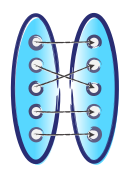
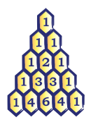

Grade 9/10/11 Courseware
The Grade 9/10/11 courseware was developed through the CEMC by experienced teachers in partnership with faculty members and multimedia developers from the University of Waterloo. The materials feature lessons, interactive activities, enrichment challenges, and unlimited opportunity for practice with feedback. The courseware is online, free to use, and does not require registration to access.
-
Number Sense and Algebraic Expressions
Exponent laws. Manipulating expressions including polynomials, radical and rational expressions. Investigating prime factorization. -
Linear Relations and Analytic Geometry
Linear and non-linear relations. Solving linear equations and linear systems. Analytic geometry and statistics. -
Measurement, Geometry, and Trigonometry
Pythagorean theorem. Measurement of 2D figures and 3D solids. Optimization. Geometric relationships. Triangle trigonometry. Angles in standard position and trigonometric identities. -
Quadratic Relations
Graphs and tables. Standard, factored and vertex forms. Algebra of quadratic relations. Quadratic equations. Intersections of lines and parabolas. - 
Introduction to Functions
Function notation. Domain and range. Transformations of functions. Inverses of functions. Inequalities, absolute values, and reciprocals. - 
Sequences, Series, and Financial Literacy
Arithmetic and geometric sequences. Financial applications including simple interest, compound interest, and annuities. -
Exponential and Trigonometric Functions
Exponential and sinusoidal functions. Properties, transformations, and applications.